Les
escape så kjapt som mulig. Du kommer til å ha en teller som starter på 1000 og går ned hver gang du gjør et valg. Hvis den havner på 0 har du tapt.
Du kan velge mellom å prøve og åpne døra eller vente og se hva som skjer. Hva vil du gjøre?
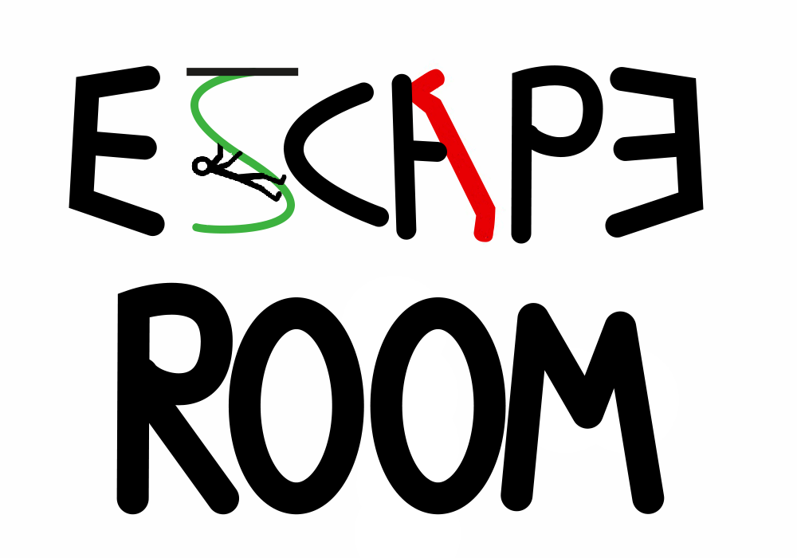
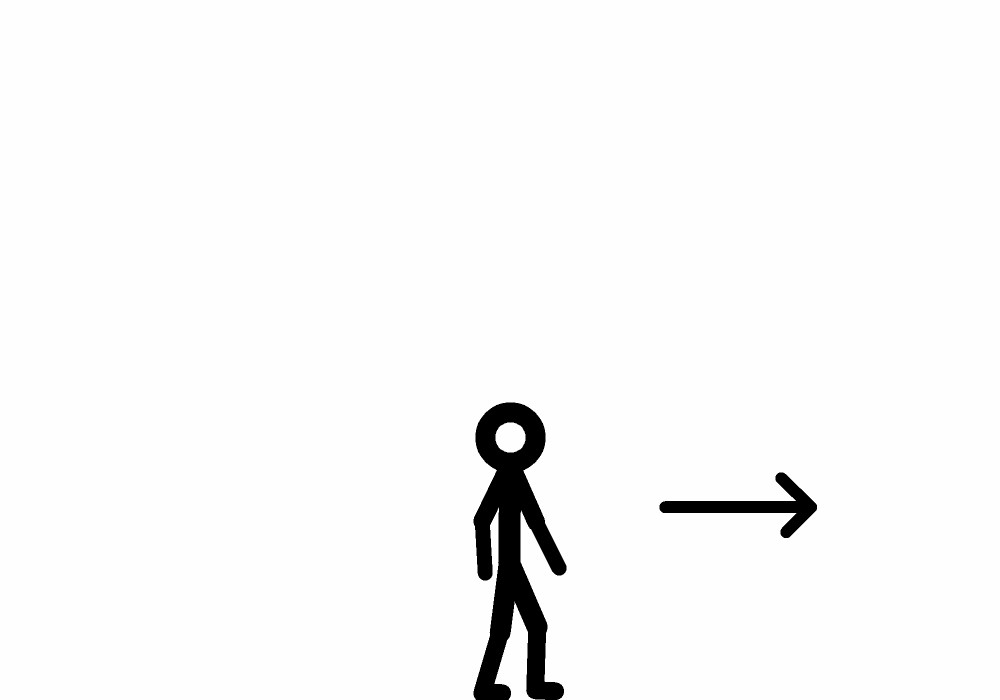
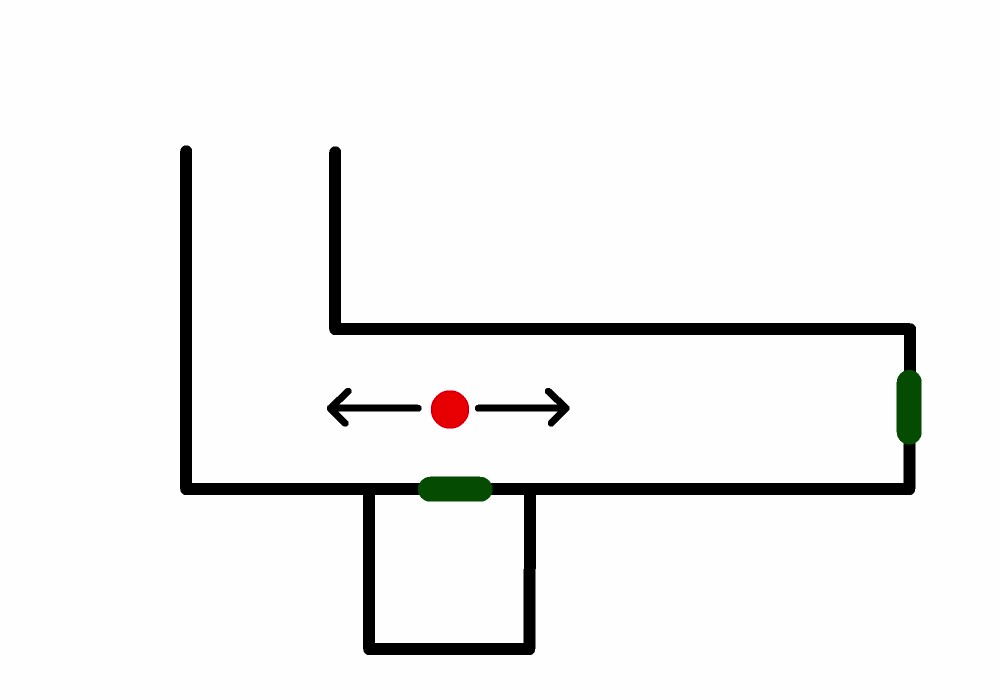
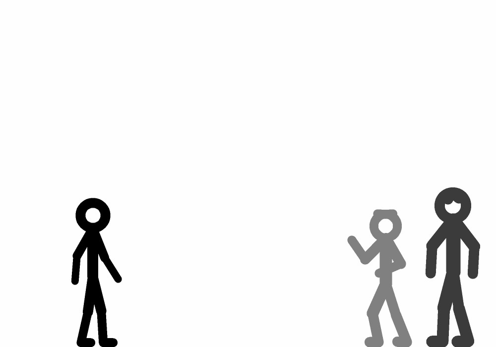
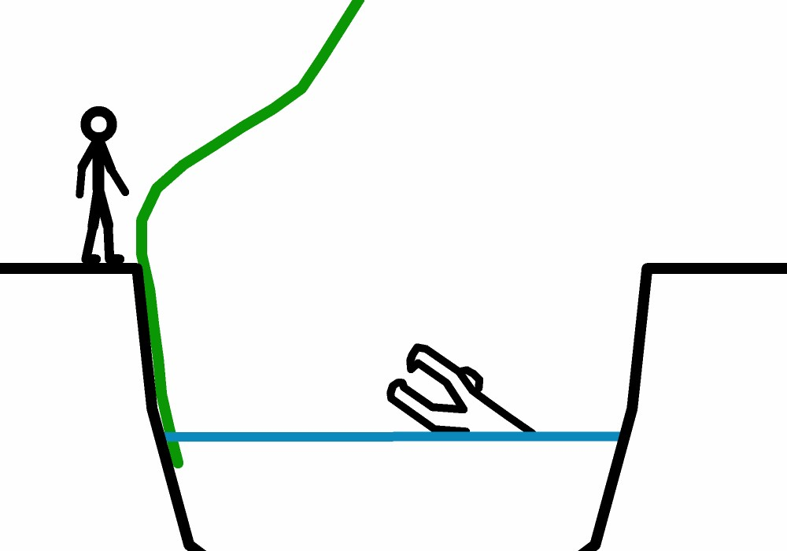
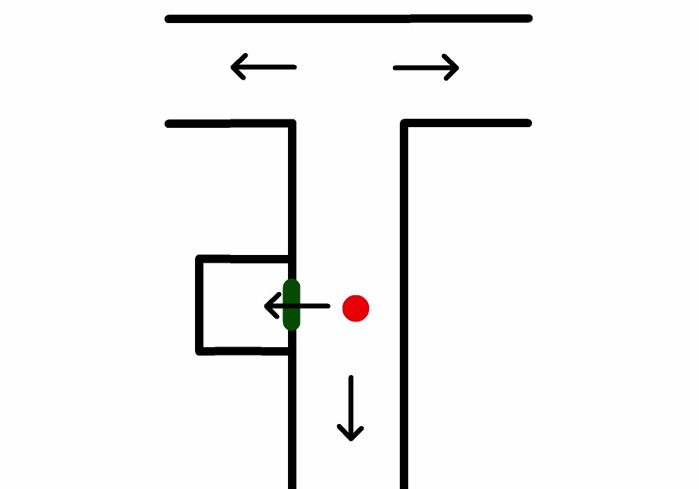
 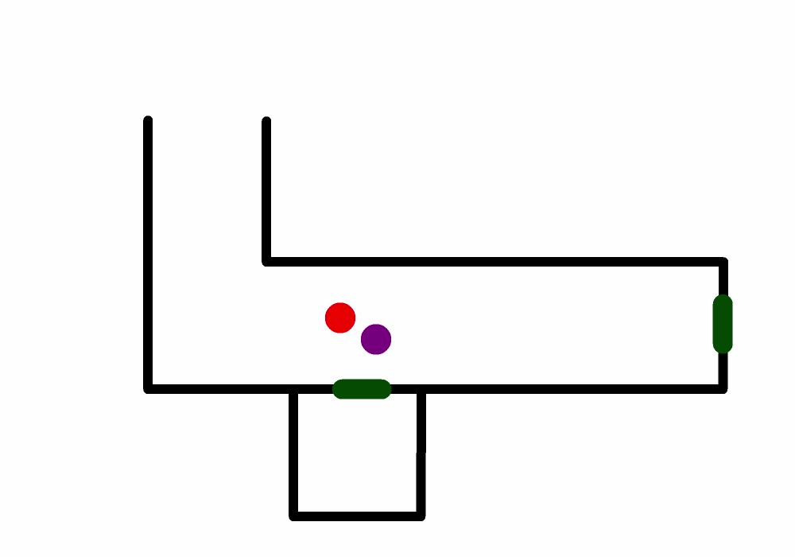
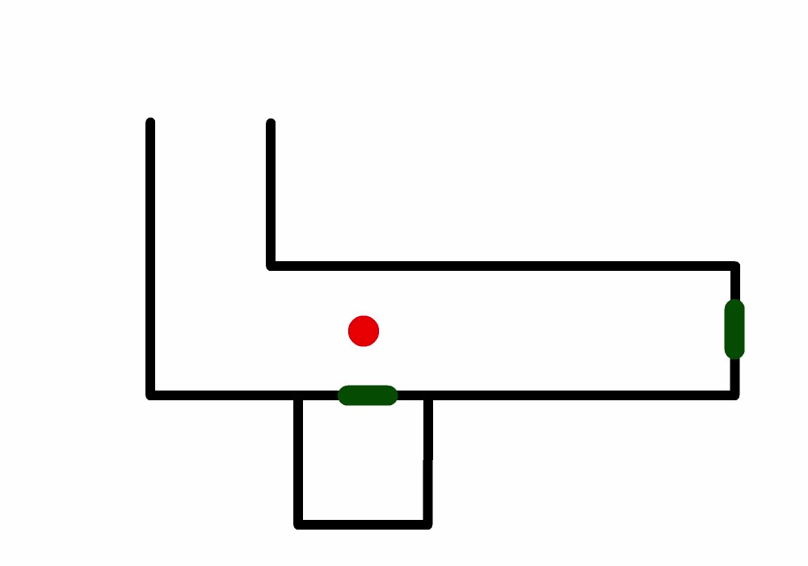
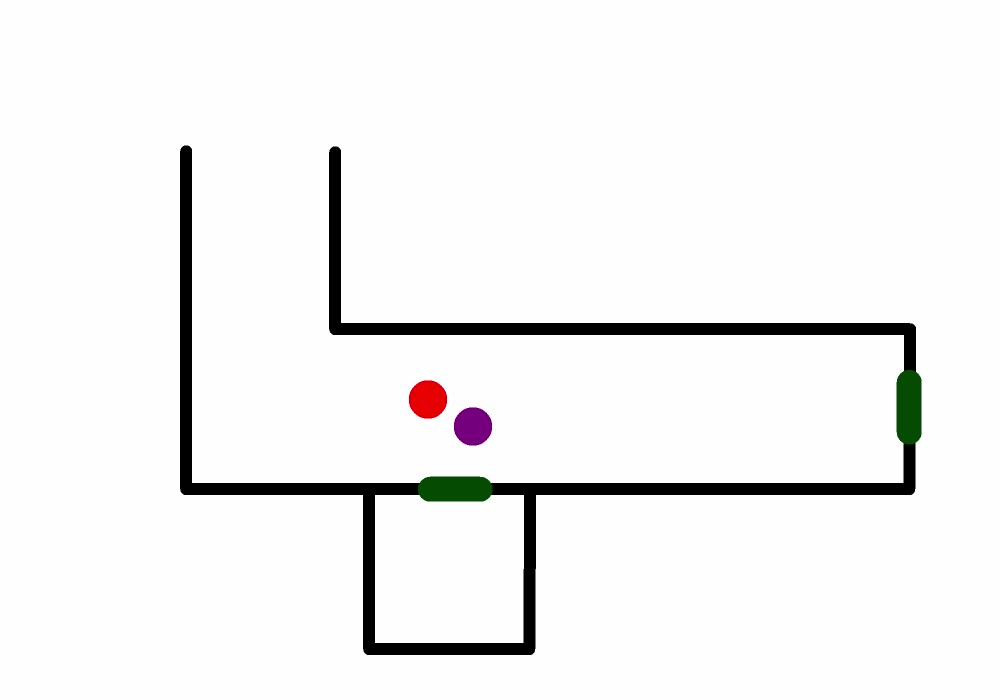
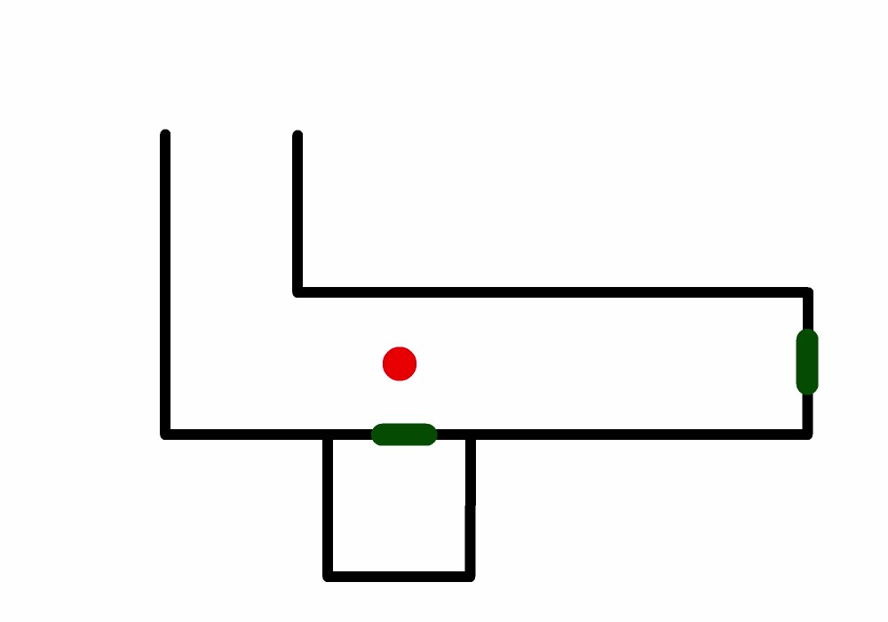
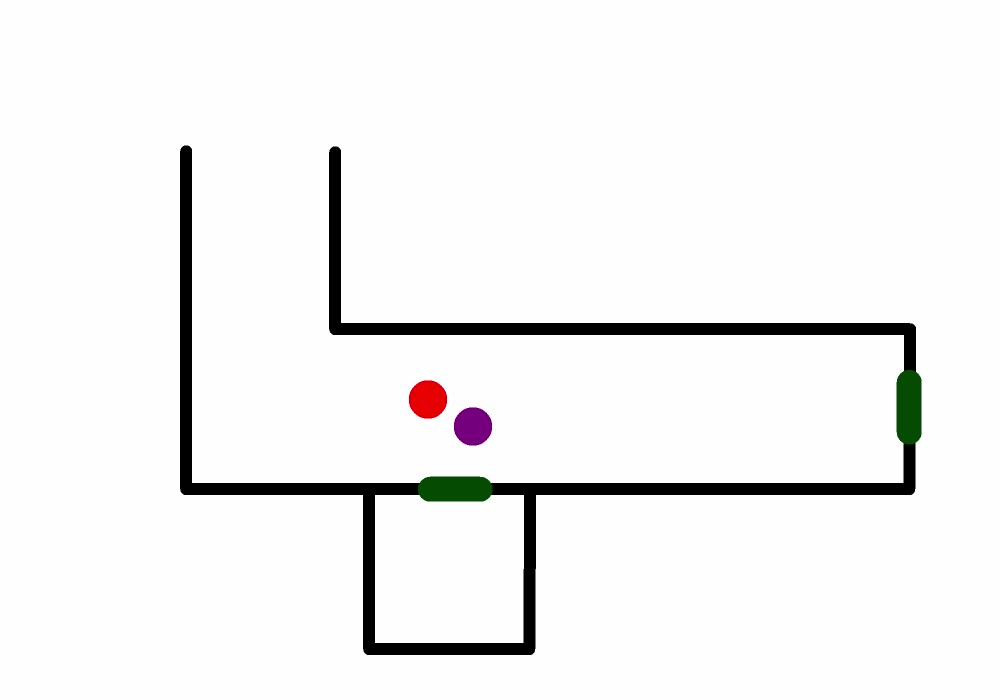
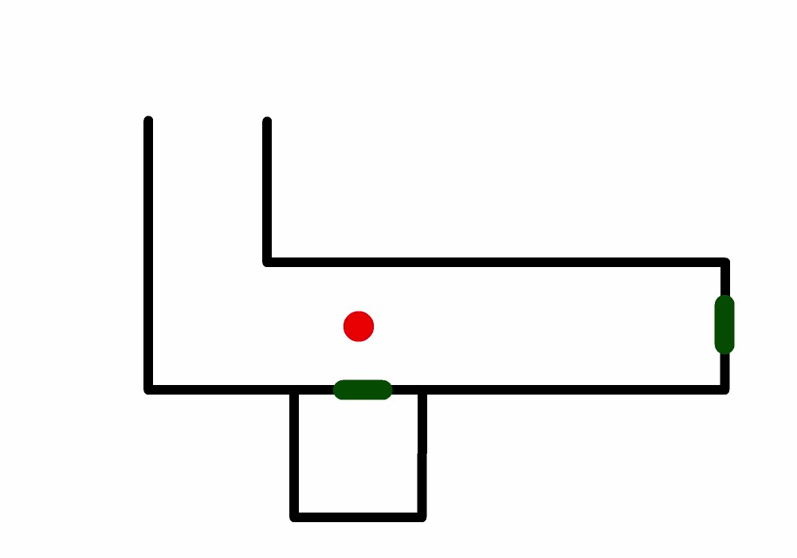
Viktig og følge med på
Dette er tid du har igjen: